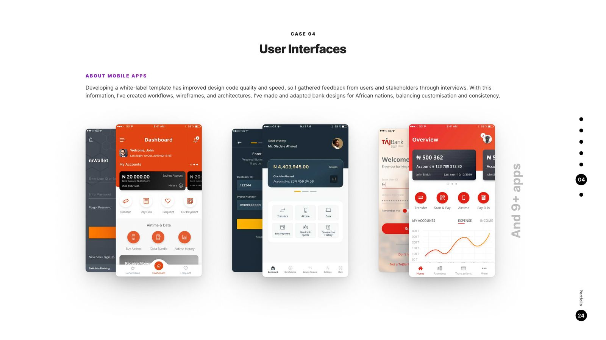

Interswitch's payment platform shaped the Nigerian payments landscape and powers its expansion across Africa. My work: designs for 12 bank apps, then a white-label template making every future bank launch dramatically cheaper and faster — while respecting regional cultures, regulatory frameworks, and security.